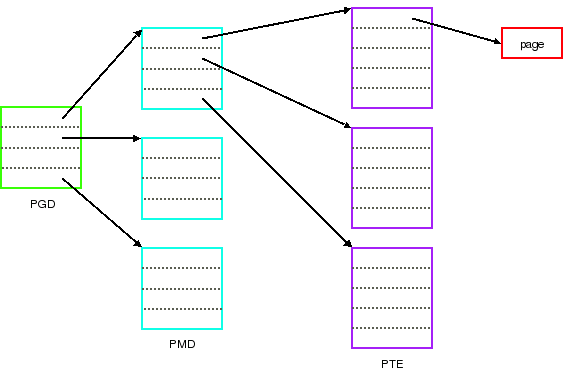

Four-level page tables
A single array large enough to hold the page table entries for a single process would be huge. On a typical x86 system, a page table entry requires 32 bits, so 1024 of them (covering 4MB of virtual address space) can be stored in one page. If the virtual address space is 3GB (as it is on many x86 systems), 768 pages would be required to hold all of the page table entries. Allocating that much contiguous memory (for each process) would be impossible, even if that sort of memory overhead were tolerable.
The fact is that most processes only use a small portion of the total virtual address space - but the parts they use are widely scattered over that space. Program text lives down near the bottom, heap memory and dynamic libraries are distributed throughout the middle, and the stack is put up at the very top. So the real page table structure must handle a sparse, widely distributed set of virtual addresses without wasting excessive amounts of memory or requiring large, physically-contiguous arrays.
To that end, modern processors which use page tables use a hierarchical, tree structure. This structure allows the table to be broken up into individual pages, and the subtrees corresponding to unused parts of the address space can be absent. The Linux kernel works with a three-level structure which looks like this:

On an x86 system running in the PAE mode (only needed when more than 4GB of memory is installed), all three levels of page tables are present. The page global directory (PGD) contains only four entries, each corresponding to 1GB of virtual address space; the PGD is indexed using the top two bits of the virtual address. Each PGD entry points to a page middle directory (PMD), which holds 512 entries indexed by bits 21-29 of the virtual address. The PMD entry (if it is not empty) points to an actual page table. Using bits 12-20 of the virtual address to index into that page table yields the actual physical address of the page, assuming that page is currently resident in RAM.
The current 2.6 kernel implements a three-level page table for all architectures. As it turns out, the bulk of x86 systems will not be running in the PAE mode; on those systems, the hardware only supports two levels of page tables. The PGD holds 1024 entries (bits 22-31), each of which points to a 1024-entry page table (bits 12-21). For the benefit of the rest of the kernel, the page table access functions are set up to emulate the existence of a single-entry PMD, so these systems still appear to use a three-level page table.
The three-level design is wired deeply into the kernel. Any code which must manually map a virtual address into its physical counterpart must do something like this (error handling and other details omitted):
pmd = pmd_offset(pgd, address); pte = *pte_offset_map(pmd, address); page = pte_page(pte);
Similarly, any kernel function which affects a range of virtual addresses must implement a depth-first traversal of the relevant portion of the three-level tree. Most of these traversals of the page table tree have been isolated behind functions, but it is still surprising how many places are coded around the three-level assumption. But it all works fine, since the architecture-specific code makes it looks like all systems have three-level page tables.
The only problem is that some hardware actually supports four-level tables. The example which is driving the current changes is x86-64. The current x86-64 port emulates a three-level architecture by using a single, shared, top-level directory ("PML4") and fitting (most of) the virtual address space in a three-level tree pointed to by a single PML4 entry. It all works, but it limits Linux processes to a mere 512GB of virtual address space. Such limits are irksome to the kernel developers when the hardware can do more, and, besides, somebody is likely to release a web browser or office suite which runs into that limit in the near future.
The solution is to shift the kernel over to using four-level page tables everywhere, with the fourth level emulated (and optimized out of existence) on architectures which do not support it. Andi Kleen has posted a four-level page tables patch which implements this change. With Andi's patch, the x86-64 architecture implements a 512-entry PML4 directory, 512-entry PGD, 512-entry PMD, and 512-entry PTE. After various deductions, that is sufficient to implement a 128TB address space, which should last for a little while.
The actual patch works as one might expect; code which currently handles
three-level page tables is extended to deal with the fourth level. There
is a default PML4 implementation which can be included by architectures
which do not have four-level tables; that should make porting most
architectures to the new scheme relatively easy. That work is likely to
happen in the near future, after which Andi has stated his intention to get
the four-level patch merged into the -mm tree. Andrew Morton has already
said (at the kernel summit) that he would consider merging such a patch.
Your Linux system may be running with four-level page tables in the near
future.
| Index entries for this article | |
|---|---|
| Kernel | Large-memory systems |
| Kernel | Memory management/Four-level page tables |
Posted Oct 14, 2004 14:13 UTC (Thu)
by ajax (guest, #7251)
[Link] (1 responses)
Posted Mar 13, 2007 5:41 UTC (Tue)
by amit2030 (guest, #27378)
[Link]
struct mm_struct *mm = current->mm;
Posted Oct 14, 2004 17:36 UTC (Thu)
by tjc (guest, #137)
[Link]
Posted Mar 22, 2013 5:52 UTC (Fri)
by e-nertia (guest, #89984)
[Link]
A nice article!
Thanks,
First line, below, needed for completeness.
Four-level page tables
pgd = pgd_offset(address);
pmd = pmd_offset(pgd, address);
pte = *pte_offset_map(pmd, address);
page = pte_page(pte);
From the kernel code, the first line is actually two lines:Four-level page tables
pgd = pgd_offset(mm, address);
Great article! I always wondered how that worked, but I didn't have time to research it. Articles like this make the subscription cost seem trivial.Four-level page tables
Four-level page tables
I was trying to understand the space required to store four-level page tables in main memory. The /proc/<pid>/status file for any process contains the field VmPTE. The man page explains the field to be "Page table entries size (since Linux 2.6.10)." So does this mean that VmPTE in case of four-level page table implementation will indicate the space required for all levels of the table or just the last level of the table i.e. storage required for Page Table Entries (PTE) only?